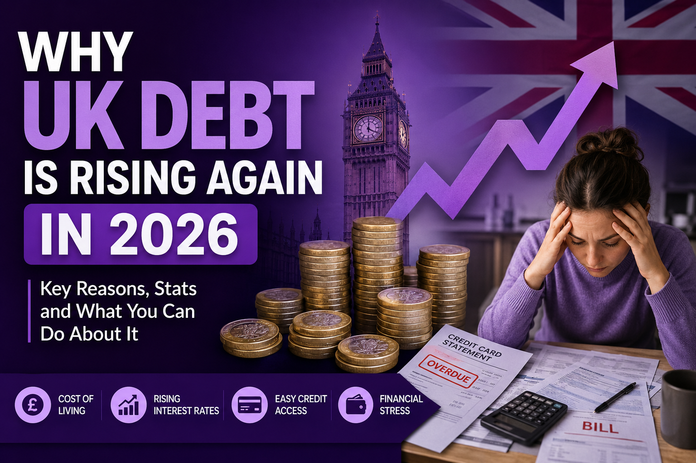

If you've felt like your money doesn't stretch as far as it used to, you're not imagining it. The UK isn't just dealing with a cost-of-living squeeze at the kitchen table — the country itself is borrowing more, owing more, and paying eye-watering sums just to service debt it already has. And that story, playing out in Westminster, has a very direct echo in millions of ordinary households across Britain.
In this article, we'll break down exactly why UK debt is climbing again in 2026, what's driving it (both nationally and for everyday families), and — more importantly — what you can actually do about it if debt is weighing on you personally. No jargon, no scaremongering, just the real picture.
Key Takeaways
| What's Happening | Why It Matters |
|---|---|
| UK national debt sits at roughly £2.9 trillion, around 93.8% of GDP | One of the highest debt burdens in the G7, limiting government spending choices |
| Debt interest payments are forecast around £126 billion for 2025–26 | That's money that can't go to the NHS, schools, or public services |
| Average UK household debt reached £67,350 in January 2026 | Rising household debt mirrors the national trend — Britain owes more at every level |
| Average credit card debt per adult is around £1,400 in 2026 | With interest rates near 24.4%, minimum payments barely dent the balance |
| Debt advice charities like StepChange and Citizens Advice saw record client numbers in March 2026 | More people than ever are actively seeking help — a sign it's okay to ask too |
The National Picture: Why Government Debt Keeps Climbing
Let's start at the top. As of mid-2026, UK national debt stands at roughly £2.9 trillion, or about 93.8% of GDP — a figure that would have sounded almost fictional a couple of decades ago. So why does it keep growing?
Part of the answer is simply the cost of servicing debt that already exists. The OBR expects total debt interest payments to reach around £126 billion in 2025–26 alone. To put that in perspective, interest on borrowing has become one of the largest single items in the entire government budget — bigger than most departmental budgets you'd expect to top the list.
Rising bond yields haven't helped either. UK bond yields have climbed to among the highest in the G7, driven by a mix of sluggish growth, stubborn inflation, and rising debt interest costs. When investors demand higher returns to lend to the UK government, every pound borrowed becomes more expensive, which pushes total debt up even further — a bit like carrying a balance on a credit card that keeps hiking its APR.
There's also a longer-term structural issue. The Office for Budget Responsibility has warned that UK national debt is on track to roughly treble over the next fifty years, driven by an ageing population, rising health and social care costs, and increasing pressure on the state pension. In plain English: more people retiring, fewer people of working age paying tax, and a growing bill for pensions and healthcare that isn't going away any time soon.
The one bright spot in the 2026 numbers is that annual borrowing has come down from the previous year. Government borrowing for 2025/26 came in at £132.0 billion, roughly £19.8 billion lower than the year before — the lowest deficit as a share of GDP since before the pandemic. Encouraging, yes — but a smaller deficit still adds to an already enormous pile of debt. Slowing down isn't the same as paying it off.
The Household Picture: Debt Is Rising Closer to Home Too
Here's where it gets personal. The national debt story isn't happening in isolation — it's playing out in living rooms and bank statements across the country too.
According to The Money Charity, average total household debt in the UK reached £67,350 in January 2026, with average debt per individual sitting at £34,774. Most of that is tied up in mortgages, but a meaningful chunk is what's often called "problem debt" — credit cards, overdrafts, and personal loans that don't come with an asset attached.
Credit cards deserve a special mention, because they're often where debt spirals fastest. The average adult in the UK is carrying around £1,400 in credit card debt in 2026, with average credit card interest rates sitting near 24.4%. At that rate, someone making only minimum payments could spend over a decade clearing the balance — and pay back nearly as much in interest as they originally borrowed.
The trend isn't slowing down either. Recent industry data shows consumer spending on credit cards rising while repayments are falling, meaning more people are falling into arrears and going over their credit limits, with balances matching record highs. It's a pattern that shows up again and again: wages are not keeping pace with the cost of living, so people lean on credit just to cover the basics.
And it's not just anecdotal. Debt advice charities including StepChange and Citizens Advice recorded record numbers of people seeking help with debt in March 2026. If you've been putting off asking for support because you feel like you should have this "sorted" by now, please know you're in very good company.
Why This Matters for You, Not Just the Treasury
It's easy to read headlines about trillions of pounds and feel like it has nothing to do with your own finances. But the connection is closer than it looks:
- Higher government borrowing costs tend to push up interest rates, which feeds directly into mortgage rates, credit card APRs, and loan repayments.
- A stretched public purse often means less support available exactly when household budgets are under the most pressure.
- Rising national debt and rising household debt share the same root causes — inflation outpacing income growth, and the rising cost of essentials like housing and energy.
In other words, the squeeze at the top and the squeeze at your kitchen table aren't two separate stories. They're the same story, told at different scales.
What You Can Actually Do About It
Here's the good news: while you can't control what happens in the Treasury, you absolutely can control what happens with your own debt. Whether it's credit cards, overdrafts, personal loans, or a mix of everything, there are proven, structured ways to bring it back under control — without shame, and without pretending the problem will just sort itself out.
That's exactly what we're here for. At Make Me Debt Free, we help people across the UK understand their options and take a practical first step toward becoming debt free, whatever their situation looks like. If you want to see the range of approaches available depending on your circumstances, our debt solutions section walks through what's out there in plain English — no confusing jargon, no pressure.
And if you're at the point where you'd rather just talk it through with a real person, our contact page is the quickest way to get in touch and have a confidential conversation about where you stand.
2026 Search Snapshot: What the UK Is Looking For
For anyone researching this topic further, here's how search interest breaks down around UK debt in 2026:
| Keyword | Search Volume | Intent |
|---|---|---|
| UK national debt 2026 | High | Informational |
| UK household debt statistics 2026 | Medium | Informational |
| Why is UK debt rising | Medium | Informational |
| Average UK debt per person 2026 | Medium | Informational / Commercial |
| Debt help UK 2026 | Medium–High | Commercial |
| How to get out of debt UK | High | Commercial |
| Credit card debt UK 2026 | Medium | Informational |
| Debt solutions UK | Medium | Commercial |
| UK government borrowing explained | Low–Medium | Informational |
| Debt free UK | Low | Commercial / Branded |
Frequently Asked Questions
Both, in a sense. Annual government borrowing has come down slightly compared to the previous year, but total accumulated national debt keeps rising because the country is still borrowing more than it repays. Household debt is following a similar pattern, with average totals continuing to climb.
Government borrowing influences interest rates, inflation, and public spending — all of which ripple down into mortgage rates, the cost of borrowing, and how much support is available if you're struggling financially.
A mix of rising living costs, wages not keeping pace with inflation, and higher interest rates on existing borrowing. Many people are using credit cards and loans just to manage everyday essentials, not luxuries.
Not worried — but it's a good prompt to take stock. If your own borrowing has crept up over the past year or two, now's a sensible time to look at your options before it becomes harder to manage.
Independent charities like StepChange and Citizens Advice offer free guidance, and specialist services like Make Me Debt Free can help you understand which route suits your specific situation. Reaching out early almost always gives you more options.
Ready to Take Control of Your Debt?
Speak to a UK debt specialist for free, confidential advice — no judgement, no obligation.
Get Free Assessment Today